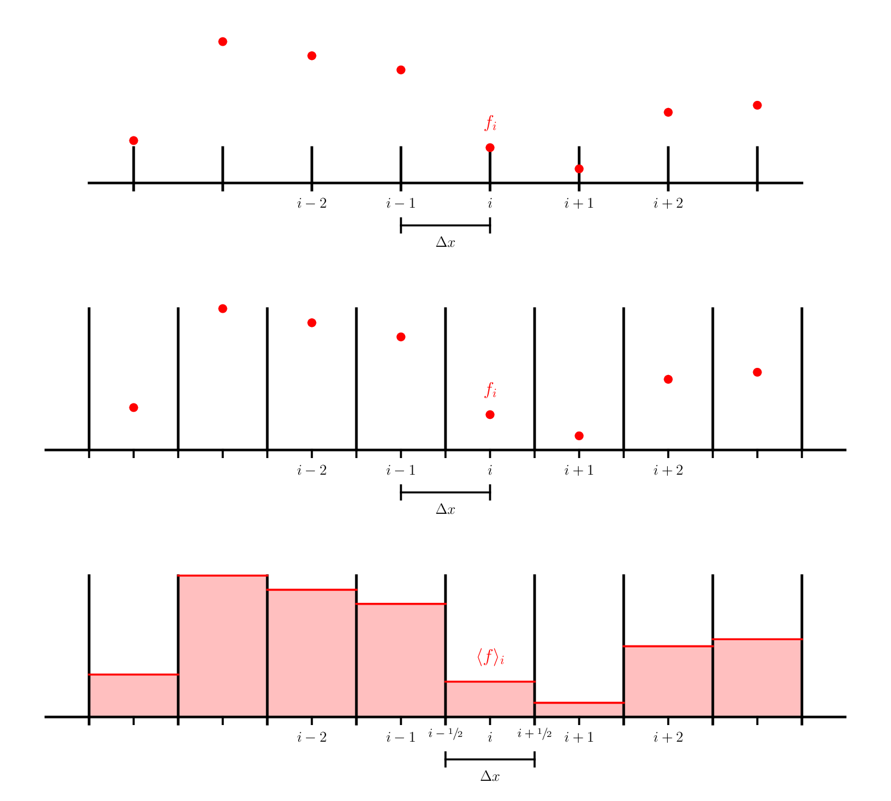
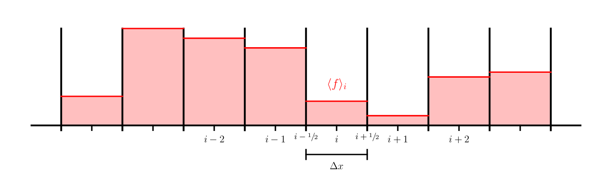
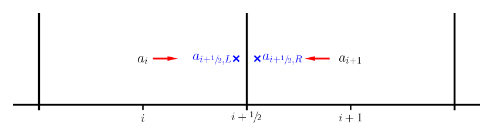

import numpy as np
import matplotlib.pyplot as plt
Finite-Volumes¶
Ultimately we are interested in conservation laws, so we want a method that respects conservation. We’ll look at this with advection first.
Here we see 3 different types of grids:

The first 2 are finite-difference grids—the data is represented at a specific point in the domain. The two differ in that the second case is a cell-centered finite-difference grid. In this case, there is not a point on the physical boundaries, while with the first example (what we were using previously), there is a data point on each boundary. For the cell-centered case, we typically talk about dividing the data into cells or zones and the data living at the center of the zone.
The last example is a finite-volume grid. Here, we don’t think of the data living at a specific point, but instead we keep track of the total amount of a quantity (or its average) in a volume. This is represented above as the shaded region inside our zone.
Cell-averages¶
Imagine we have a function \(f(x)\) that we wish to represent on our grid, using a finite-volume discretization.

We can define the average of \(f(x)\) in a zone that goes from \(x_{i-1/2}\) to \(x_{i+1/2}\) as:
We use the angle brackets to indicate that this is an average, and use an integer index, \(i\), to indicate that this data lives in zone \(i\).
Now consider our linear advection equation,
written in conservative form:
where \(F(a) = ua\) is the flux.
Let’s average (integrate) this equation over a zone (from \([x_{i-1/2}, x_{i+1/2}]\)):
we can recognize the left is the time-derivative of the average of \(a\) and the right, via the divergence theorem is just the flux different through the boundary of the zone:
Time update¶
Let’s start with a first-order update in time. We can use the Euler method we already saw,
in which case our update appears as:
We expect this to be first order accurate in time. Notice that the fluxes are evaluated at the old time.
Reconstruction and the Riemann problem¶
We need the value of the flux on the interface, \(F_{i+1/2}\), we find this using the analytic expression for the flux, \(F(a)\), as:
So now we need to find the interface state, \(a_{i+1/2}\).
Getting the value of \(a\) on the interface from the average, \(\langle a \rangle\) is called reconstruction. It means we need to infer how \(a\) actually varies throughout the cell just from the information we have about its average value. There are a variety of methods we can use (some of which we will explore later). For now, we will do the simplest, and assume that \(a(x)\) is constant in each cell:
Notice that we actually have 2 values for the interface state when we do this, one coming from each side of the interface—we label these as the left and right states:

Now we need to resolve this degeneracy—which of the two states (or what combination of them) is the correct interface state? This is where the physics of the problem comes into play. This is called the Riemann problem.
For advection it is easy. We know that for \(u > 0\) that \(a(x)\) moves from left to right, so the correct state on the interface is the left state—this is upwinding.
where we indicate the Riemann problem as \(\mathcal{R}(a_{i+1/2,L},a_{i+1/2,R})\).
For the advection equation, with \(u > 0\), our interface states are
Inserting these into our difference equation, we have:
This is precisely the upwind finite-difference scheme we saw earlier.